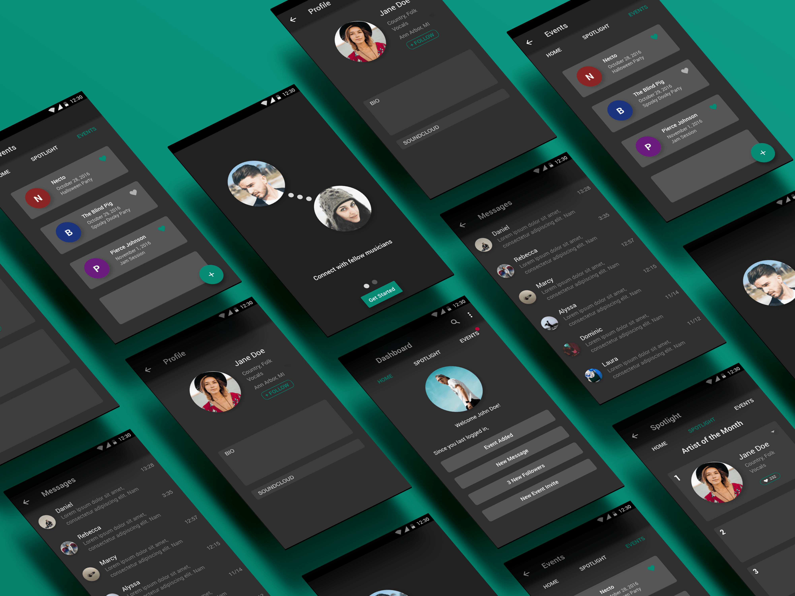
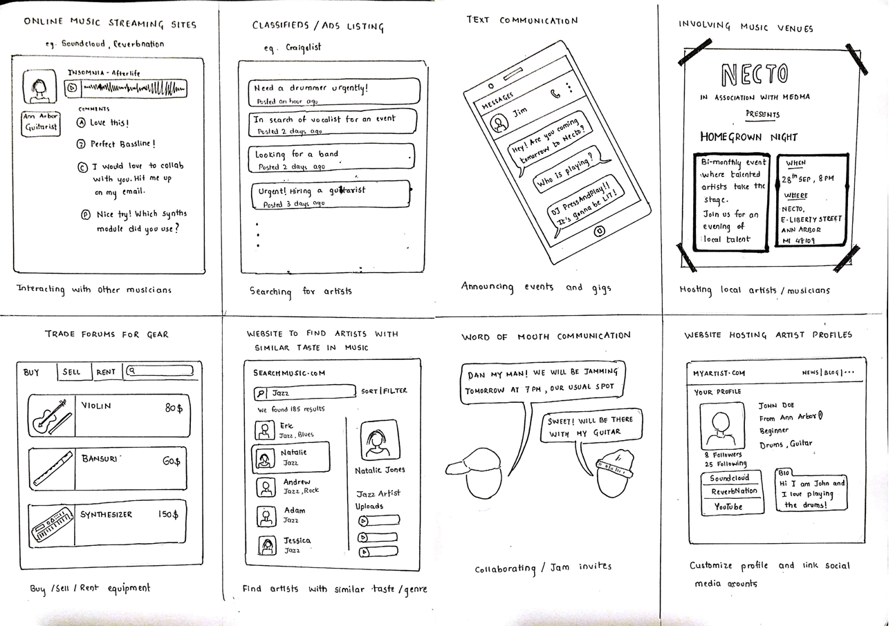
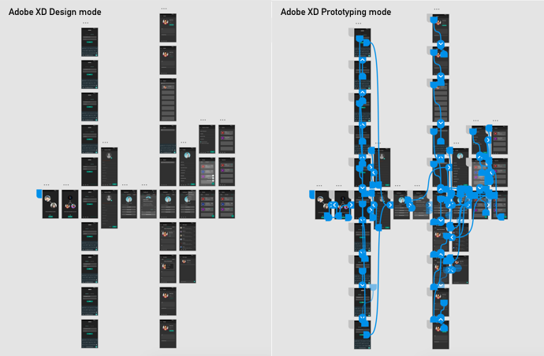
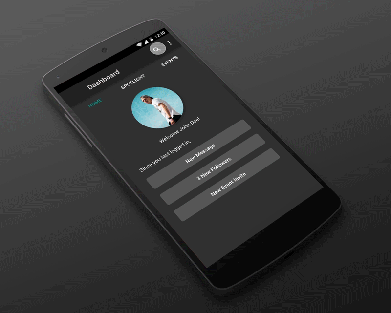

Rhythm- Networking App for Musicians
Conceptualized and designed a networking app for musicians*
- Task: Develop a solution to any problem faced by a local community. The final form of the solution should be an application/ website
- What I did: Interviews, survey, sketching, storyboarding, paper prototyping, hi-fi prototyping
*Individual project for Interaction design class, Sept-Dec 2016
WORKFLOW
The various phases of the project included defining the problem, Sketching, Storyboarding, Paper Prototyping and creating a hi-fi Prototype, interspersed with peer feedback sessions. The overall process was broken down into the following stages -
- Identify the Community
- Identify the Problem
- Establish the Goal
- Design Stages (Sketching to Prototyping)
——
THE COMMUNITY CHOSEN
I decided to focus on the problems of the student musicians at the University of Michigan. The university has a lot of student organizations such as Maize Collective, Stamp Nation, The Jam Club, that cater to musicians on the campus. I decided to choose this community because I am a musician myself and an active part of one such organization called The Jam Club. I decided on event promoters as my secondary audience as they played a huge role in giving musicians a platform to perform and grow.
——
SCOPING DOWN THE PROBLEM
To find out where the needs of my target audience were not being met, I conducted interviews with the heads of student organizations catering to student musicians, as well as student musicians themselves. I eventually conducted a total of 6 interviews. A Google form was also sent out to student musicians to ask them about their attitudes and behavior. I devised 3 personas and 1 anti-persona based on the interview data and survey responses.
Through the research phase, I discovered that local musicians have no single medium to interact and be aware of the events happening in the community.
——
THE CONCEPT
With the data uncovered from the needs asssessment phase, I sketched out 8 unique ideas that would solve the problem. The sketches were very rough and this phase was meant to help diverge the thinking process. The next stage involved storyboarding the 8 sketches to uncover additional insights into the ideas.
The sketches and storyboards helped shape the structure of my final idea. I established a project objective – designing a tool for local and upcoming musicians to connect and interact – to guide me while making design decisions further ahead in the process. My final vision of the project looked something like this -
- A platform that connects local musicians and promotes interaction
- A platform that holds information about the local musicians
- A platform that fosters collaboration among musicians
——
DEVELOPING THE FEATURES
Feedback from the users, on my vision and the sketches, proved valuable in narrowing down the features in my deliverable. I finally decided on the following as my primary features
- Personal Profile for each Musician/ Promoter - The Profile would display information about a musician's preferred genres, instruments played, website/ Soundcloud links and a short bio. For Promoters, it would display the Club affiliation, genres preferred, club website and a bio.
- Events Section - Options to Create Events/ Invite friends to an event
- Spotlight Section - Every month, the community will upvote an artist based on the track they submit. Promoters can book the top ranking artists, after hearing the mix and visiting their profile.
- Search for artists - Artists can be searched on the app by name/ genres/ instruments played.
——
PROTOTYPING
With a premature design in mind, I developed a paper prototype for both the musician as well as event promoter user flow. The freedom and flexibility offered by the lo-fi prototyping method of using paper mockups was really useful to fine tune the interactions of the final app. Peer feedback received on the prototype helped me decide the minute details in the hi-fi prototype.
The final prototype was created for Android OS using Adobe XD. I decided to go with Adobe XD over Sketch due to the former's ability to convert screens to interactive prototype with just a switch from Design to Prototype Mode. The limited capabilities of making a design interactive in XD were sufficient for my final project deliverable. Being an Android user, it was easy for me to design the app for the Android OS. For a thorough explanation of the proposed app and the whole process, please check out the final report here.
——
REFLECTING ON THE PROJECT
With this being my first ever project in the Interaction Design domain, I learnt a lot about the various methodologies of design. While I briefly did User Research through interviews and surveys, I realized the importance of involving users early and often to shape the course of the design process. The final prototype I delivered was based on Material Design Guidelines, but my designs did not follow all the rules. I would love to revisit this project in the near future, design a better UI and test it out with my users.